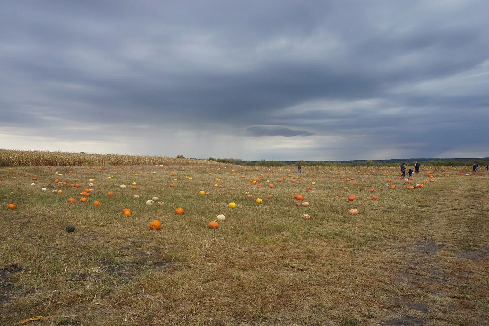

Vining cucurbits in beds under 2m escape the bed.
Mechanism: C. pepo vining types run 2-4m. Bush cultivars run under 1m.
Evidence: settled without a trial - growth habit.
remedy
Specify bush habit for beds under 4 sq m, or accept sprawl.

Two packets can both say "squash" and grow plants that need four times the room. The word that decides your spacing isn't the one most people read.
See how much room squash needs at your place →
What you need
Here's a thing that catches almost everybody once. You plant squash in a 1.2 m4 ft raised bed alongside some other crops. By August one plant has crossed the bed, crossed the path, and is heading into the lawn, and the things you planted next to it are pale and stunted underneath it.
You didn't do anything wrong at planting. You bought the wrong kind, and the packet very likely didn't make that obvious, because both kinds are sold under the same crop name and are, in fact, the same species.
Mechanism: C. pepo vining types run 2-4m. Bush cultivars run under 1m.
Evidence: settled without a trial - growth habit.
Specify bush habit for beds under 4 sq m, or accept sprawl.
The card calls that well established, and it's worth noticing why something this mundane earns the site's top confidence: it isn't a claim about biology anybody has to test. It's a measurement. The plant runs a certain distance; the bed is a certain width; if the first number is bigger than the second, the plant ends up outside the bed. There's no mechanism to be sceptical about.
This is why this site models cultivar groups as a first-class thing rather than treating a species as one plant. Look at what the corpus records for Cucurbita pepo - a single species covering zucchini, summer squash, acorn squash and pumpkin:
A bush plant wants about a metre. A vining plant wants two to four. That isn't a small difference you can absorb with tighter spacing - it's the difference between one plant filling a corner and one plant filling the entire bed and then some.
And nothing about the crop name tells you which you bought. "Squash" isn't the unit of information here. The cultivar group is. That's the whole reason the planner resolves a species plus its group before it decides anything about space - a rule that fired on the bare species would be wrong about half the packets on the shelf.
The sprawl itself isn't really the problem. Three consequences are:
In anything under about 4 square metres, buy bush. This is the remedy the rule itself gives, and it costs you almost nothing: bush summer squash and zucchini are productive, they mature fast (45 - 60 days), and the flavour question doesn't really come up - the habit is a growth difference, not a quality one.
If you want a vining type, plan the sprawl instead of being surprised by it. Vining squash and pumpkin are worth growing; they just need to be pointed somewhere. Site one at the edge of a bed and let it run out onto ground you weren't going to use, rather than in across your other crops. This is a real option, and the rule allows it explicitly - accept the sprawl, deliberately.
Or send it upward - which is where the second half of this gets interesting.
The vining group's record says its support requirement is optional, strong: it doesn't need a trellis, but it will use one, and a vine going up is a vine not going sideways. In a small garden that's the most space you can buy with one decision.
But "strong" is doing real work in that phrase, and there's a rule about what happens when the thing you lean it on is alive:
Mechanism: Mechanical load on a living stem.
Evidence: settled without a trial - mechanics.
Put fewer vines on the living support, or use a built support — a cattle panel is effectively unbounded.
This is the one that surprises people who've read about growing beans up sunflowers, or squash up corn. Those arrangements are real and they work - but a living stalk is a structural member with a load limit, and the corpus puts rough figures on it: a sunflower carries about two vines, a corn stalk one to two, and a built support like a cattle panel is effectively unlimited.
The honesty note attached to that rule is worth repeating, because it's unusually careful. The claim - a living stem can't carry unlimited load - needs no study; it's mechanics, the same way a shelf has a limit. The numbers are a different matter, and every one of them is flagged as merely estimated where it lives on the species record. So the rule is confident that a limit exists and openly unsure exactly where it sits. Treat two vines per sunflower as a sensible starting point, not a measurement.
If you're hanging a heavy vining squash on anything, that's what a built support is for. The staking and support guide covers the structures; the Three Sisters mound is the case where a living support is the whole point of the design - and note that even there, the squash is on the ground, not up the corn.
Before you buy squash, cucumber or melon seed, find the habit word on the packet - bush, compact, trailing, vining. Under about 4 square metres, take bush and stop thinking about it. Over that, or at an edge you can let a plant run off, vining is yours. And if you trellis it, remember the trellis has to hold a squash: a cattle panel will, and a corn stalk won't.
Next in What to grow → How to build a Three Sisters mound
The rules this guide leans on:
Plants in this guide: Summer Squash